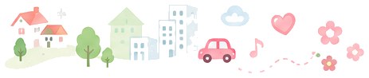
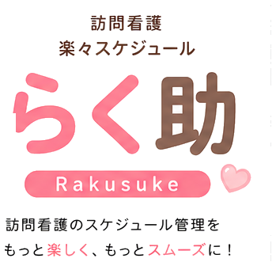
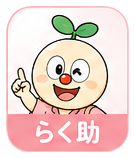
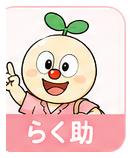
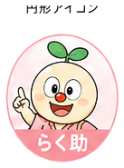

CareFlow → らく助 リブランディング（ハイブリッド配色案）。ブランド層＝ピンク系へ刷新、機能層（性別カード・状態色・警告色）＝現行維持。実装前の見た目合意用。
点線枠＝現行から据え置くもの。それ以外がらく助パレットからの導入。
左から: ログイン（フル適用）／ PC版管理（中程度）／ モバイル・スタッフ（フル適用）



現状 favicon は未設置。丸みスクエアを基準に 512/192/favicon を生成する。


らく助 — 訪問看護 楽々スケジュール